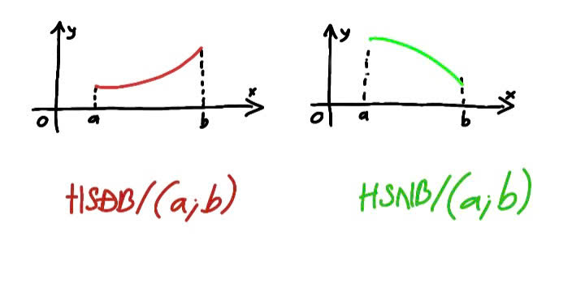
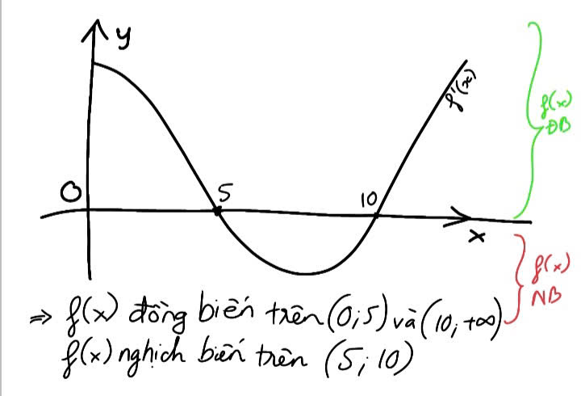
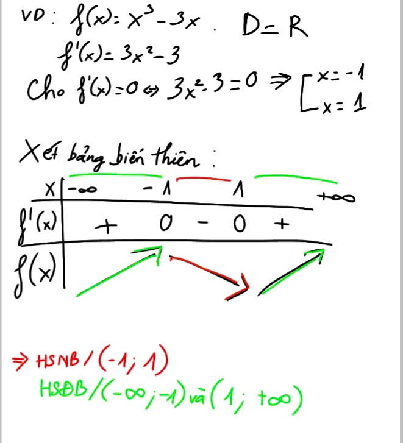

TÍNH ĐƠN ĐIỆU CỦA HÀM SỐ
1. Khái niệm
Một hàm số \( y = f(x) \) được gọi là:
- Đồng biến (tăng) trên khoảng \( I \) nếu với mọi \( x_1, x_2 \in I, x_1 < x_2 \Rightarrow f(x_1) < f(x_2) \).
- Nghịch biến (giảm) trên khoảng \( I \) nếu với mọi \( x_1, x_2 \in I, x_1 < x_2 \Rightarrow f(x_1) > f(x_2) \).
Nói dễ hiểu:
- Đồng biến: đi sang phải thì đồ thị đi lên.
- Nghịch biến: đi sang phải thì đồ thị đi xuống.
Đồ thị minh họa
2. Liên hệ với đạo hàm
Tính đơn điệu thường được xác định bằng dấu của đạo hàm:
- Nếu \( f'(x) > 0 \) với mọi \( x \in I \Rightarrow f(x) \) đồng biến trên \( I \).
- Nếu \( f'(x) < 0 \) với mọi \( x \in I \Rightarrow f(x) \) nghịch biến trên \( I \).
- Nếu \( f'(x) = 0 \) tại một số điểm riêng lẻ → không ảnh hưởng, nhưng cần xét kỹ xem hàm có đổi chiều biến thiên tại đó không.
Đồ thị minh họa
3. Cách tìm khoảng đơn điệu
Muốn xét tính đơn điệu của \( f(x) \) trên một khoảng:
- Tìm tập xác định \( D \).
- Tính đạo hàm \( f'(x) \).
- Giải phương trình \( f'(x) = 0 \) hoặc tìm \( f'(x) \) không xác định → chia \( D \) thành các khoảng con.
- Xét dấu của \( f'(x) \) trên từng khoảng.
- Kết luận khoảng đồng biến/nghịch biến.
4. Ví dụ minh họa
Xét \( f(x) = x^3 - 3x \).
- Tập xác định: \( \mathbb{R} \).
- Đạo hàm: \( f'(x) = 3x^2 - 3 = 3(x^2 - 1) = 3(x-1)(x+1) \).
- Giải \( f'(x) = 0 \Rightarrow x = -1, x = 1 \).
- Chia \( \mathbb{R} \) thành các khoảng: \( (-\infty, -1), (-1, 1), (1, +\infty) \).
- Xét dấu:
- Với \( x < -1 \): \( f'(x) > 0 \Rightarrow f \) đồng biến.
- Với \( -1 < x < 1 \): \( f'(x) < 0 \Rightarrow f \) nghịch biến.
- Với \( x > 1 \): \( f'(x) > 0 \Rightarrow f \) đồng biến.
\( f(x) \) đồng biến trên \( (-\infty, -1) \) và \( (1, +\infty) \).
\( f(x) \) nghịch biến trên \( (-1, 1) \).
-------------
BÀI GIẢI TAY
-------------------------------------------------------------------------------------------------------------------------------------------------------------------------------------------------------------
CỰC TRỊ CỦA HÀM SỐ
1. Khái niệm
Cho hàm số \( y = f(x) \) xác định trên một khoảng.
-
\( x_0 \) là điểm cực đại nếu \( f(x_0) \) là giá trị lớn nhất cục bộ:
\[ f(x) \leq f(x_0), \quad \forall x \ \text{gần } x_0 \] -
\( x_0 \) là điểm cực tiểu nếu \( f(x_0) \) là giá trị nhỏ nhất cục bộ:
\[ f(x) \geq f(x_0), \quad \forall x \ \text{gần } x_0 \]
* Cực trị = cực đại + cực tiểu.
2. Điều kiện cực trị
(a) Điều kiện cần (dựa vào đạo hàm bậc 1)
Nếu \( f(x) \) có cực trị tại \( x_0 \) (và khả vi tại đó) thì:
\[ f'(x_0) = 0 \] hoặc \( f'(x_0) \) không xác định.
📌 Các điểm như vậy gọi là điểm tới hạn.
(b) Điều kiện đủ (dựa vào dấu đạo hàm)
- Nếu \( f'(x) \) đổi dấu từ dương → âm khi đi qua \( x_0 \) → \( x_0 \) là cực đại.
- Nếu \( f'(x) \) đổi dấu từ âm → dương khi đi qua \( x_0 \) → \( x_0 \) là cực tiểu.
- Nếu không đổi dấu → \( x_0 \) không phải cực trị (có thể là điểm uốn).
(c) Kiểm tra bằng đạo hàm bậc 2 (cách nhanh hơn)
Nếu \( f'(x_0) = 0 \) và \( f''(x_0) \) tồn tại:
- \( f''(x_0) > 0 \) → \( x_0 \) là cực tiểu.
- \( f''(x_0) < 0 \) → \( x_0 \) là cực đại.
- \( f''(x_0) = 0 \) → chưa kết luận, phải xét thêm.
3. Ví dụ minh họa
Xét hàm: \( f(x) = x^3 - 3x \)
- \( f'(x) = 3x^2 - 3 = 3(x-1)(x+1) \).
- Giải \( f'(x) = 0 \Rightarrow x = -1, x = 1 \).
- \( f''(x) = 6x \).
Với \( x=-1 \): \( f''(-1) = -6 < 0 \Rightarrow x=-1 \) là cực đại, \( f(-1)=2 \).
Với \( x=1 \): \( f''(1) = 6 > 0 \Rightarrow x=1 \) là cực tiểu, \( f(1)=-2 \).
➡ Hàm số có cực đại tại \((-1,2)\), cực tiểu tại \((1,-2)\).